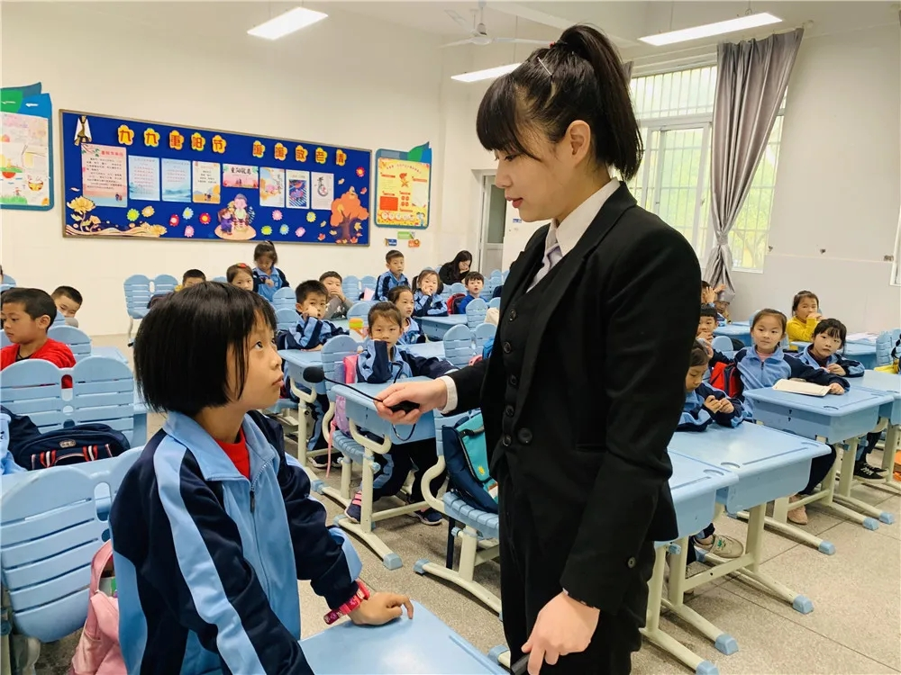
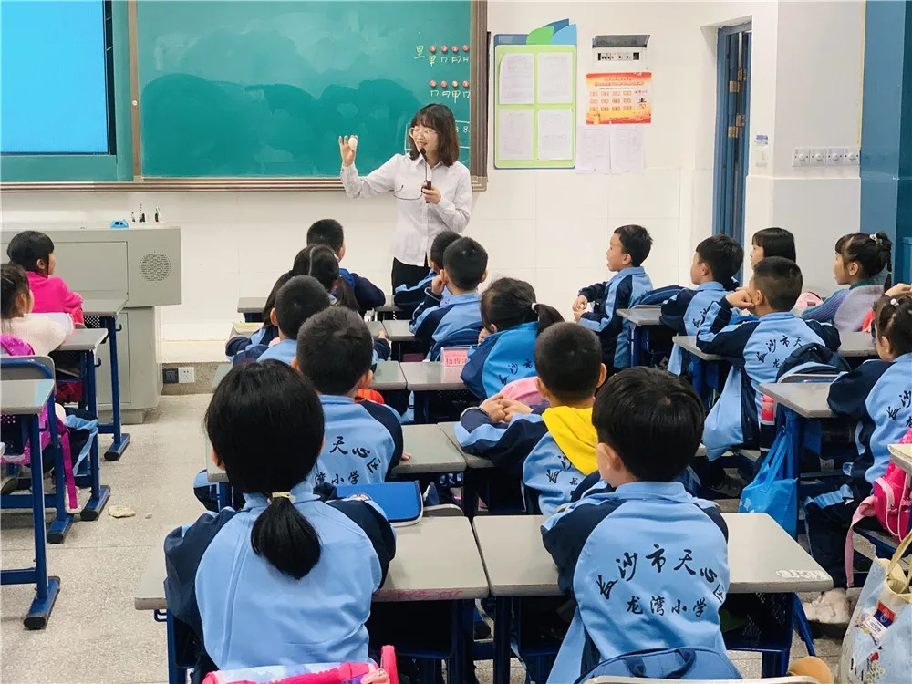

Добро пожаловать на сайт ZOO Zoo~
Являясь «национальной научно-образовательной базой», зоопарк стремится к инновациям в курсах естественных наук, активно внедряя знания в области зоотехники в классные занятия, предлагая целевые специальные курсы для учащихся всех классов и активно продвигая знания, связанные с зоотехникой, в интересной форме. и яркие объяснения. После того, как курс был запущен, реакция была восторженной, и он получил много похвал от учителей и учеников.
Учитель естествознания провел для учащихся живые и интересные уроки естествознания. Внедрение научно-популярных предметов в класс завершилось отлично, и мы договоримся о встрече в следующем году~
 